Punto 1:Instalación y conexión inicial de los equipos de Internet L-D 🌎
Para tener acceso a internet, ofrecemos dos medios de distribución de datos, Fibra Óptica y Radioenlace. Para que el internet funcione en tu casa o negocio necesitarás algunos elementos que permitan conectarte y son los siguientes:
• Fibra Óptica
Fibra Óptica: La fibra óptica es un medio de comunicación de datos de alta velocidad, llega a tu casa a través de una red distribuida que puede variar dependiendo de la ubicación geográfica.
En general, la fibra óptica es llevada de una caja de conexiones en una calle cercana a tu hogar o negocio.
Un módem u ONU: Este dispositivo se conecta a la línea de cable de fibra que llega a tu casa o negocio y te permite conectarte a internet.
Un router: Este equipo se conecta al módem y te permite conectar varios dispositivos a internet a través de una red inalámbrica (Wi-Fi) o mediante un cable Ethernet.
• Radioenlace
Un radioenlace es una conexión de comunicaciones inalámbricas que utiliza ondas de radio para transmitir información entre dos puntos distantes. Este tipo de enlace es ampliamente utilizado en telecomunicaciones para proporcionar conexiones a larga distancia entre dos ubicaciones sin la necesidad de instalar cables físicos.
Una antena Receptora de Señal: Una antena de radioenlace es un componente fundamental en las comunicaciones inalámbricas que se utiliza para transmitir y recibir señales de radiofrecuencia entre dos puntos distantes. Estas antenas se utilizan en diversas aplicaciones, como la transmisión de señales de televisión, la comunicación inalámbrica de datos, la telefonía móvil, la transmisión de datos satelitales y la transmisión de señales de radio a larga distancia. La elección de la antena adecuada para una aplicación particular depende de varios factores técnicos.
Un módem o PoE: Este dispositivo se conecta a través de un cable UTP a la antena receptora, permite alimentar de corriente la antena y conectarte a internet mediante un router.
Un router: Este dispositivo se conecta al módem o PoE y te permite conectar varios dispositivos a internet a través de una red inalámbrica (Wi-Fi) o mediante un cable Ethernet.
Recomendación Clientes Radioenlace
Para el efectivo funcionamiento de una antena de radioenlace, es importante considerar las siguientes recomendaciones de entorno:
Ubicación: Es importante elegir una ubicación adecuada para la antena, evitando obstáculos que puedan interferir con la señal. Es recomendable ubicar la antena en un lugar alto y despejado.
Distancia: La distancia entre las antenas debe ser adecuada según la frecuencia utilizada y el tipo de antena. Es importante asegurarse de que la distancia sea la adecuada para evitar interferencias.
Orientación: La orientación de la antena debe ser precisa para lograr la mejor calidad de señal. Es importante considerar la dirección de la señal y los posibles obstáculos que puedan interferir.
Altura: La altura de la antena también es importante para su funcionamiento. Es recomendable que la antena esté a una altura suficiente para evitar obstáculos y lograr la mejor calidad de señal.
Protección: Se recomienda ser protegida de posibles daños causados por otros factores externos y sistemas de anclaje adecuados para asegurar la estabilidad de la antena.
Punto 2: Soporte y Reinicio General de Equipos 🔀
Estos pasos puedes hacerlos 2 veces por mes, no importa si el servicio funciona normalmente.• Manipulación de los equipos
En caso de que tengas algún inconveniente con la conexión de internet, puedes seguir estos pasos para solucionar los problemas más comunes:
Verifica la conexión de los cables: Asegúrate de que los equipos estén encendidos, que todos los cables estén conectados correctamente y que no haya cables sueltos o desconectados.
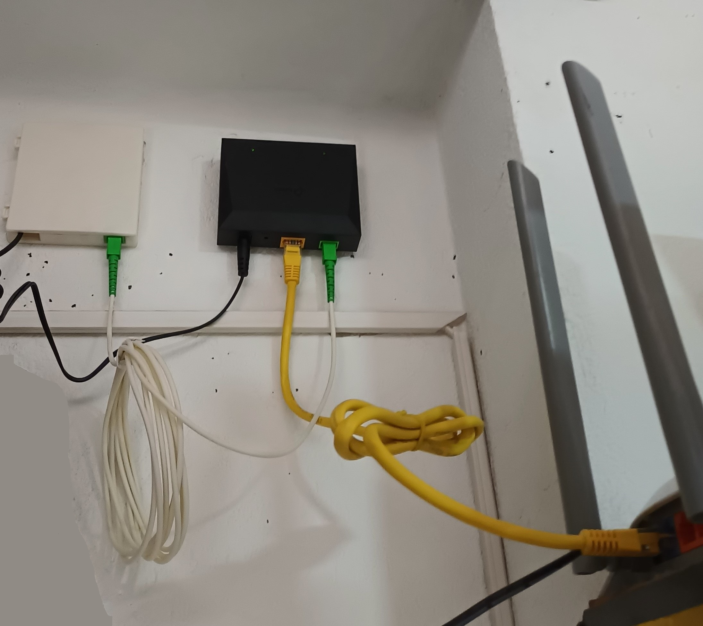 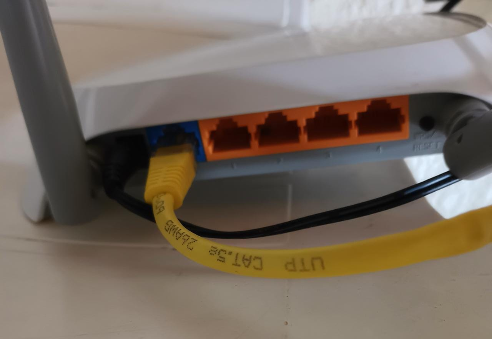
 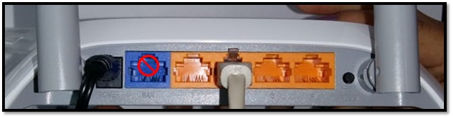
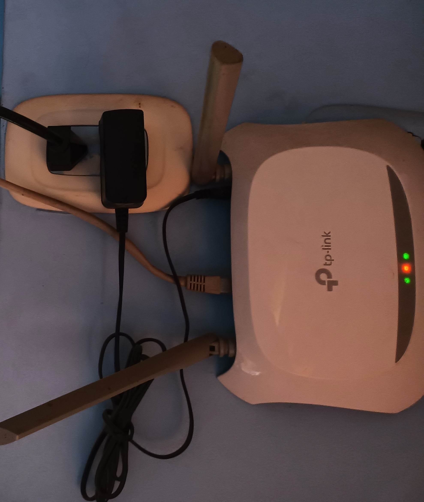
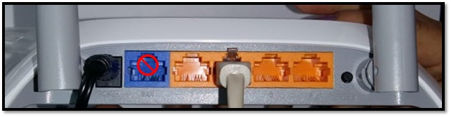
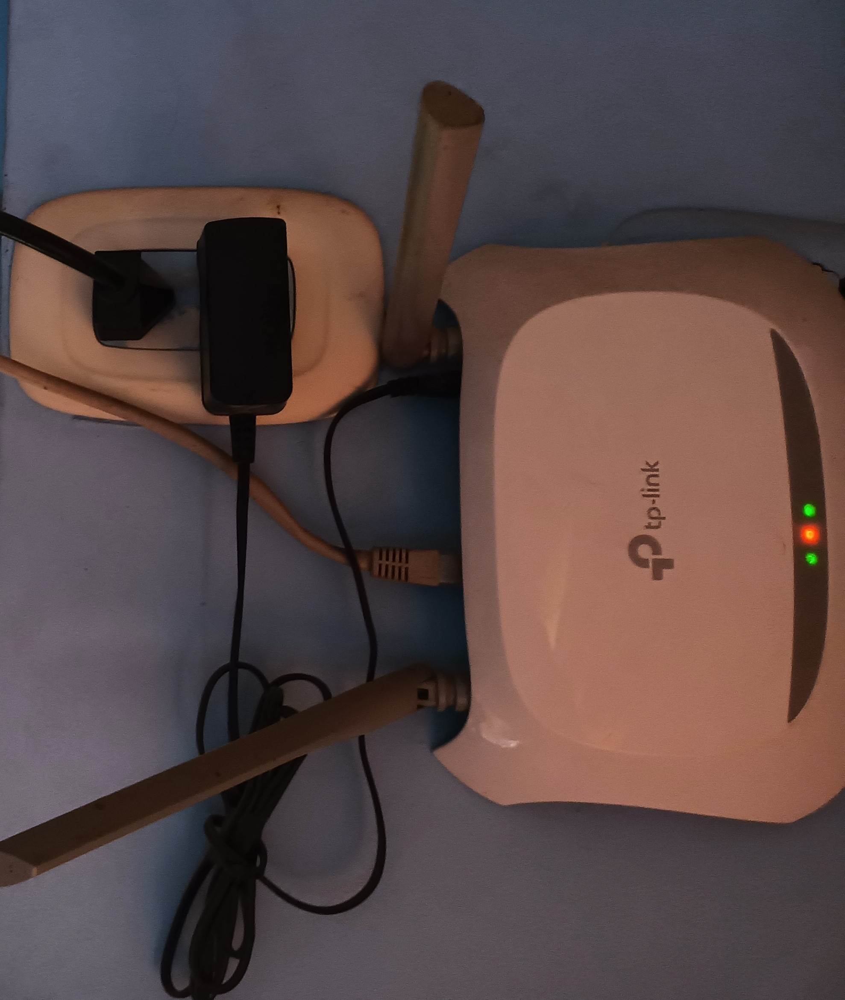
Reinicia los equipos: Apaga y enciende el módem y el router para reiniciar la conexión. También puedes desconectar las fuentes de los dispositivos del tomacorriente 10 segundos y volver a conectarlas.
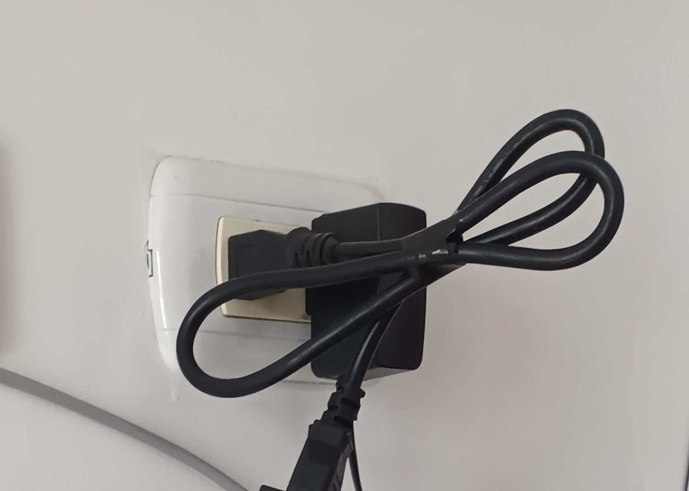
Verifica la conexión del proveedor de servicio de internet: Si los pasos anteriores no funcionan, contáctanos para verificar si actualmente se está presentando un fallo en la red.
Punto 3: Uso adecuado de los equipos de Internet ✋
Claves para el buen uso de los equipos de Internet
La conexión a Internet es una herramienta esencial en el hogar o en el negocio, por lo que es importante saber cómo cuidar los equipos que la brindan para prolongar su vida útil y garantizar un uso óptimo. Aquí te brindamos algunos consejos para el cuidado de los equipos de Internet.
• Ubicación del router: Coloca el router en un lugar central del hogar o negocio, lejos de electrodomésticos que puedan interferir en la señal, como microondas, teléfonos inalámbricos o televisores. Asegúrate de que esté en un lugar ventilado y no cubierto por otros objetos, ya que esto puede afectar la calidad de la señal.
• Reinicio periódico: Reinicia el router al menos una vez al mes, ya que esto puede ayudar a mejorar la velocidad y estabilidad de la conexión.
• Mantenimiento: Limpia regularmente los equipos con un paño suave y seco para evitar la acumulación de polvo, ya que esto puede afectar su funcionamiento.
• Contraseña segura: Configura una contraseña segura y única para tu red WiFi, ya que esto evita que personas no autorizadas se conecten a tu red y puedan acceder a tus datos personales.
• Configuración adecuada: Asegúrate de que la configuración del router esté adecuada, como inicialmente se dejó instalado, ya que esto puede afectar la velocidad y calidad de la conexión.
Siguiendo estos sencillos consejos, podrás prolongar la vida útil de tus equipos de Internet y disfrutar de una conexión estable y segura en tu hogar o negocio.
Punto 4: Luces de estado de los equipos de Internet 🟢🟠
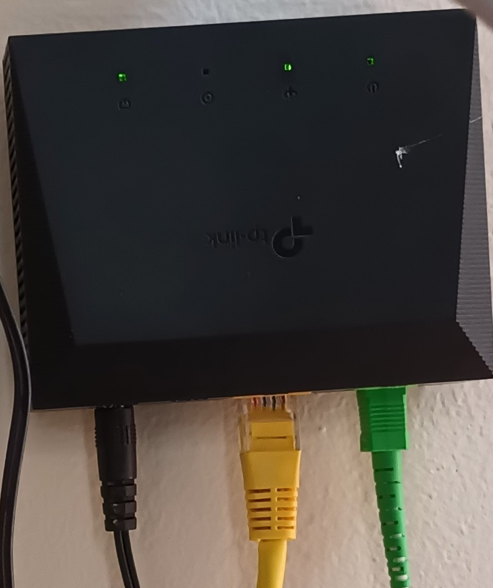 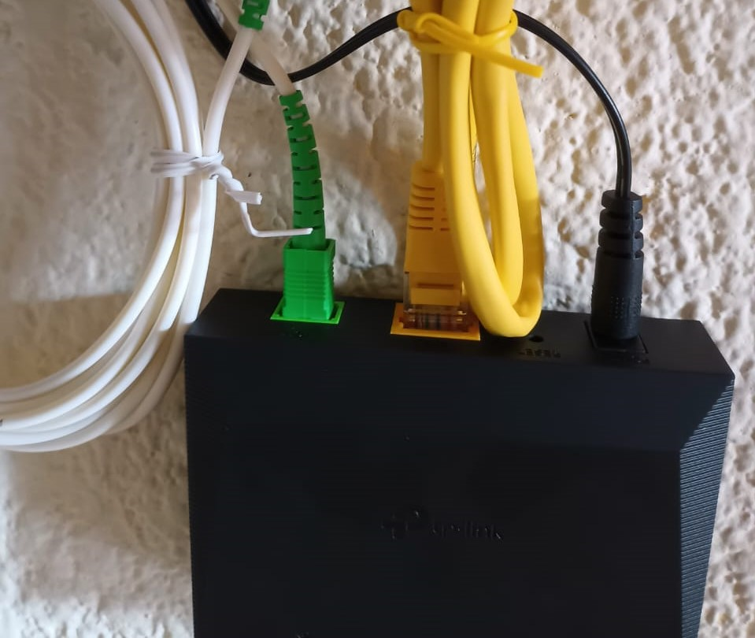 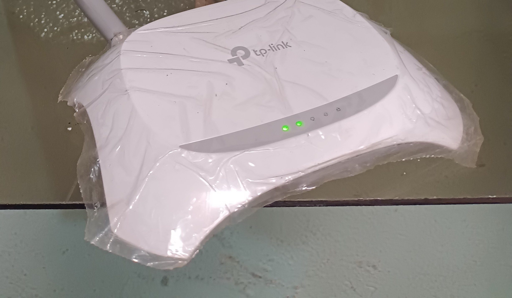
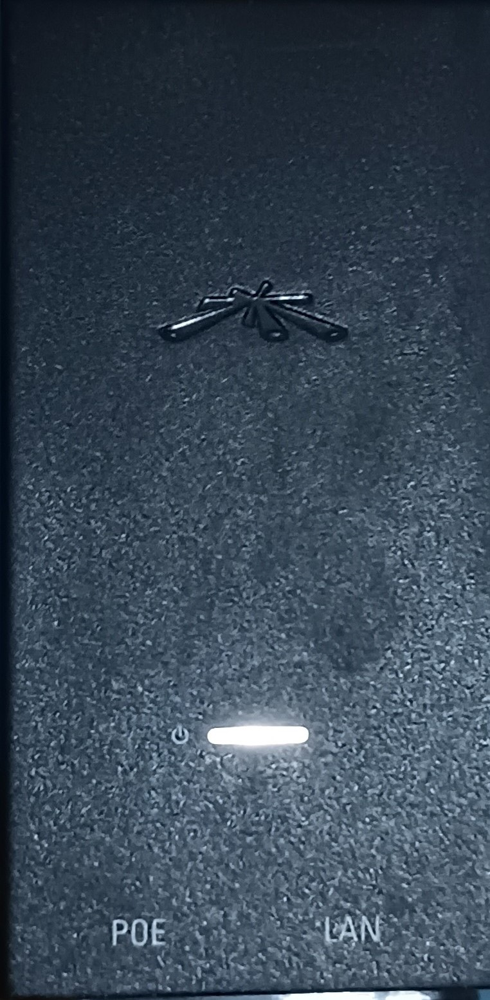 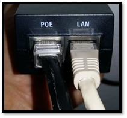 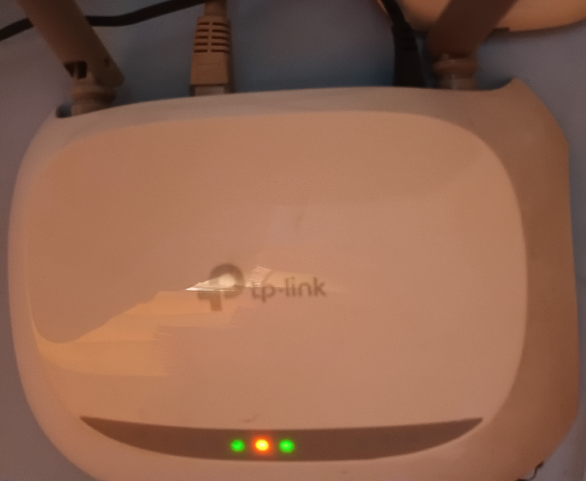
Los equipos de internet, como los routers, PoE y ONU, tienen una serie de luces de estado que indican si el equipo está funcionando correctamente o si hay algún problema.
Es importante tener en cuenta que la ubicación y el número de luces pueden variar según el modelo y la marca del equipo. En cualquier caso, si observas inconvenientes con el servicio y alguna luz de estado parpadeando de manera constante o si alguna de estas luces no está encendida, es posible que haya algún problema con tu conexión a internet. En ese caso, es recomendable contactar con el servicio técnico de Logística Digital, te atenderán muy amablemente.
Punto 5: Recomendaciones eléctricas ⚡
Cuando contratamos un servicio de internet, nos entregan una serie de equipos que nos permiten conectarnos a la red. Sin embargo, muchas veces no le prestamos la atención necesaria a estos dispositivos y terminamos teniendo problemas de conexión o incluso dañando los equipos. Por eso, es importante tener en cuenta algunos cuidados técnicos para prolongar la vida útil de nuestros equipos de internet.
Las sobretensiones eléctricas pueden dañar los equipos de internet, por lo que es importante contar con protección contra sobretensiones. Esto se puede lograr mediante la utilización de un estabilizador de corriente, UPS o un sistema de protección contra sobrecargas.
Conclusión
1. "Recuerden, amigos, una conexión a internet no es solo una conexión, es una responsabilidad. Traten a su módem con el mismo cariño que tratarían a un recién nacido... Bueno, tal vez no tan lejos, pero sí cuídenlo, que no es fácil criar una señal Wi-Fi fuerte y saludable."
2. "Instalar un router no es ciencia de cohetes, pero tampoco es tarea de niños. Asegúrense de no enchufar su modem a una tostadora y de no poner su router en el horno. Con estos consejos básicos, ya estarán por encima de la media de usuarios de internet."
3. "En resumen, si quieren tener una conexión a internet fiable y duradera, hay que tratarla como a un cactus del desierto: dale un lugar soleado, riega con moderación y no lo toques demasiado. Y, por supuesto, ¡no intentes conectarte desde la ducha!"